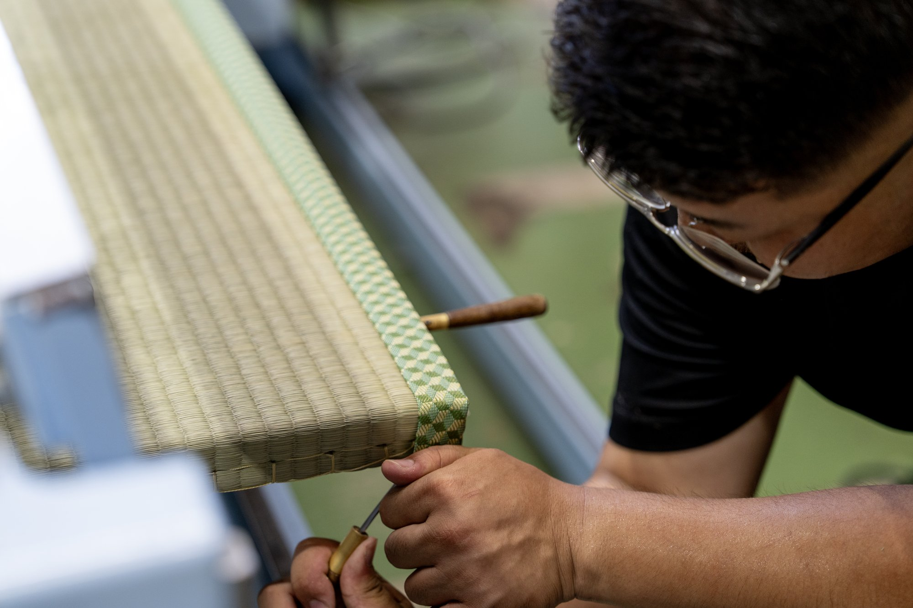
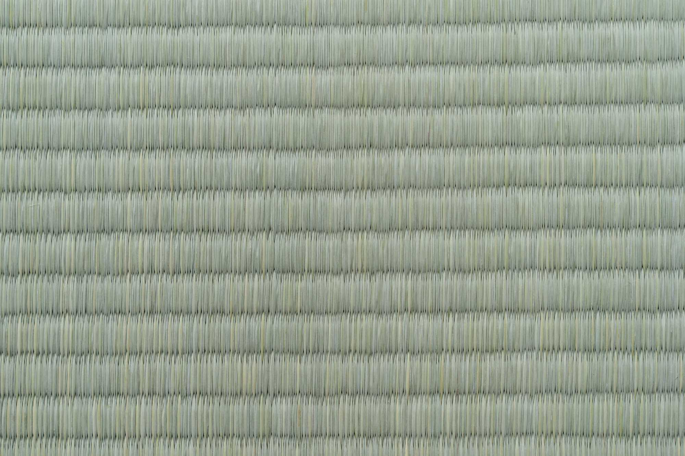
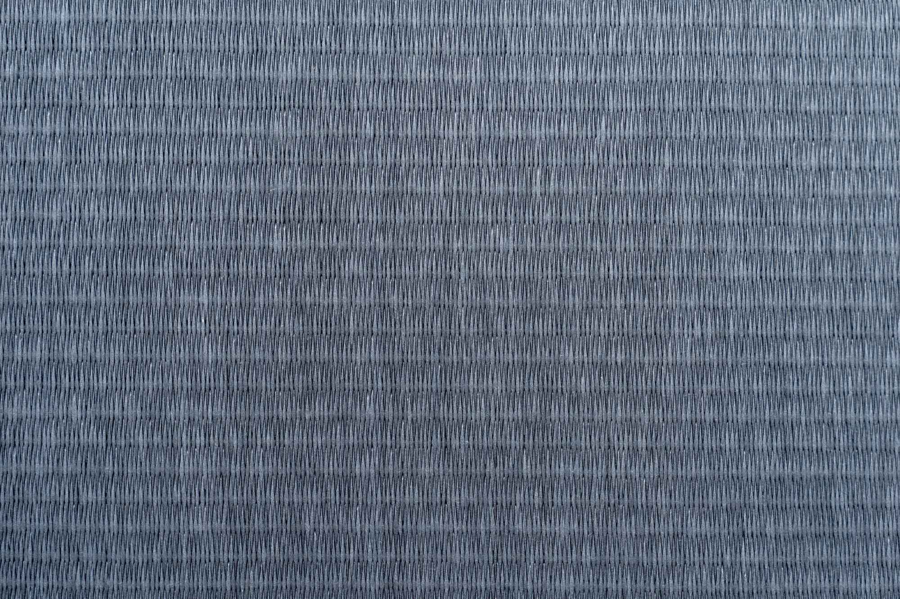

創業83年。地域に根ざし、一枚一枚に真心を込めて
畳づくりを続けてきました。
妥協はしない。
一枚一枚に、
確かな技術とこだわりを。
本気で仕事をした、その先にあるお客様の「きれいになった」「頼んでよかった」という言葉のために。
ひと目で違いがわかる仕上がりを、一つひとつの畳に積み重ねています。

見た目や香りだけでなく、クッション性や耐久性まで、
畳は幾つもの部材が重なって出来ています。
仕組みを知ると、選び方も変わってきます。

天然素材ならではの香りと風合い。
使い始めは青々と、時間とともに黄金色へ変化していく、国産い草にこだわった一枚です。

色あせ・汚れ・日焼けに強く、美しい見た目を長く保てる和紙表。
※上記は一部の色味です。他のカラーも
ございますので、お気軽にご相談ください。
正確な金額は畳のサイズ・状態により異なります。お見積りは無料ですので、
まずはお気軽にご相談ください。
畳のことなら、
どんなに小さなことでも
お気軽にご相談ください。
見積もりは無料です。まずはお電話でお声がけください。
TEL / FAX 0274-52-2966 受付時間 8:00〜20:00ご来店をご希望の方も、まずは一度お電話にてご相談ください。